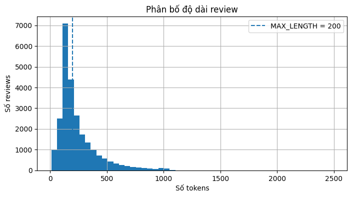

Notebook này xây dựng mô hình phân loại cảm xúc review phim bằng Simple RNN trong Keras.
Đầu vào: một review phim bằng tiếng Anh.
Nhãn 0: negative.
Nhãn 1: positive.
Dataset: IMDB Movie Reviews có sẵn trong Keras và tự tải ở lần chạy đầu.
Mục tiêu
Hiểu token, vocabulary, sequence và padding.
Hiểu Embedding và hidden state của RNN.
Xây dựng Embedding → SimpleRNN → Dense.
Huấn luyện bằng model.fit().
Đánh giá Accuracy, Precision, Recall và F1.
Dự đoán một câu mới.
Lưu và nạp lại model.
Có thể chạy trên CPU. GPU không bắt buộc.
1. Text classification là gì?
Text classification là bài toán gán nhãn cho văn bản.
Văn bản
Nhãn
This movie was excellent.
Positive
The story was boring.
Negative
Pipeline:
Raw text
↓
Tokenization
↓
Word IDs
↓
Padding
↓
Embedding
↓
RNN
↓
Classification
2. RNN hoạt động thế nào?
RNN đọc chuỗi theo từng time step. Ở bước t, model nhận từ hiện tại x_t và hidden state trước đó h_{t-1}:
h_t = \tanh(W_xx_t + W_hh_{t-1} + b)
Hidden state đóng vai trò như một bộ nhớ tóm tắt các từ đã đọc.
word 1 → h1 → word 2 → h2 → word 3 → h3 → prediction
Simple RNN dễ hiểu nhưng có thể gặp vanishing gradient trên chuỗi dài. LSTM và GRU là các biến thể mạnh hơn.
3. Embedding Layer
Máy tính không xử lý trực tiếp từ. Mỗi word ID được biến thành một vector:
word ID 49
↓
[0.12, -0.35, ..., 0.41]
Nếu vocabulary có 10.000 từ và embedding dimension là 64, embedding matrix có shape (10000, 64).
4. Import thư viện
import reimport randomimport numpy as npimport matplotlib.pyplot as pltimport tensorflow as tfimport kerasfrom keras import layersprint("TensorFlow:", tf.__version__)print("Keras:", keras.__version__)print("GPU:", tf.config.list_physical_devices("GPU"))SEED =42random.seed(SEED)np.random.seed(SEED)tf.random.set_seed(SEED)
Downloading data from https://storage.googleapis.com/tensorflow/tf-keras-datasets/imdb.npz
17464789/17464789━━━━━━━━━━━━━━━━━━━━0s 0us/step
Train reviews: 25000
Test reviews: 25000
Số token review đầu: 218
Nhãn review đầu: 1
20 word IDs đầu: [1, 14, 22, 16, 43, 530, 973, 1622, 1385, 65, 458, 4468, 66, 3941, 4, 173, 36, 256, 5, 25]
7. Khảo sát độ dài review
train_lengths = np.array([len(review) for review in x_train])print("Min:", train_lengths.min())print("Mean:", train_lengths.mean())print("Median:", np.median(train_lengths))print("Max:", train_lengths.max())plt.figure(figsize=(8, 4))plt.hist(train_lengths, bins=50)plt.axvline( MAX_LENGTH, linestyle="--", label=f"MAX_LENGTH = {MAX_LENGTH}",)plt.xlabel("Số tokens")plt.ylabel("Số reviews")plt.title("Phân bố độ dài review")plt.legend()plt.grid(True)plt.show()
Min: 11
Mean: 238.71364
Median: 178.0
Max: 2494

8. Giải mã word IDs thành văn bản
Các ID đặc biệt:
ID
Ý nghĩa
0
Padding
1
Start token
2
Unknown word
3
Unused
word_index = imdb.get_word_index()reverse_word_index = { index +3: wordfor word, index in word_index.items()}reverse_word_index[0] ="<PAD>"reverse_word_index[1] ="<START>"reverse_word_index[2] ="<UNK>"reverse_word_index[3] ="<UNUSED>"def decode_review(sequence):return" ".join( reverse_word_index.get(int(word_id), "<UNK>")for word_id in sequence )print("Nhãn:", y_train[0])print(decode_review(x_train[0])[:1500])
Downloading data from https://storage.googleapis.com/tensorflow/tf-keras-datasets/imdb_word_index.json
1641221/1641221━━━━━━━━━━━━━━━━━━━━0s 0us/step
Nhãn: 1
<START> this film was just brilliant casting location scenery story direction everyone's really suited the part they played and you could just imagine being there robert <UNK> is an amazing actor and now the same being director <UNK> father came from the same scottish island as myself so i loved the fact there was a real connection with this film the witty remarks throughout the film were great it was just brilliant so much that i bought the film as soon as it was released for <UNK> and would recommend it to everyone to watch and the fly fishing was amazing really cried at the end it was so sad and you know what they say if you cry at a film it must have been good and this definitely was also <UNK> to the two little boy's that played the <UNK> of norman and paul they were just brilliant children are often left out of the <UNK> list i think because the stars that play them all grown up are such a big profile for the whole film but these children are amazing and should be praised for what they have done don't you think the whole story was so lovely because it was true and was someone's life after all that was shared with us all
9. Padding và truncation
Mỗi review được đưa về đúng 200 tokens.
[5, 8, 2]
↓
[0, 0, 0, 5, 8, 2]
mask_zero=True trong Embedding giúp RNN bỏ qua padding ID 0.
for index inrange(5): probability =float(test_probabilities[index]) prediction =int(probability >=0.5)print("="*80)print("True label:", int(y_test[index]))print("Predicted label:", prediction)print("Positive probability:", round(probability, 4))print(decode_review(x_test[index])[:800])
================================================================================
True label: 0
Predicted label: 0
Positive probability: 0.2005
<START> please give this one a miss br br <UNK> <UNK> and the rest of the cast rendered terrible performances the show is flat flat flat br br i don't know how michael madison could have allowed this one on his plate he almost seemed to know this wasn't going to work out and his performance was quite <UNK> so all you madison fans give this a miss
================================================================================
True label: 1
Predicted label: 1
Positive probability: 0.9658
<START> this film requires a lot of patience because it focuses on mood and character development the plot is very simple and many of the scenes take place on the same set in frances <UNK> the sandy dennis character apartment but the film builds to a disturbing climax br br the characters create an atmosphere <UNK> with sexual tension and psychological <UNK> it's very interesting that robert altman directed this considering the style and structure of his other films still the trademark altman audio style is evident here and there i think what really makes this film work is the brilliant performance by sandy dennis it's definitely one of her darker characters but she plays it so perfectly and convincingly that it's scary michael burns does a good job as the mute young man regular altman pla
================================================================================
True label: 1
Predicted label: 1
Positive probability: 0.5912
<START> many animation buffs consider <UNK> <UNK> the great forgotten genius of one special branch of the art puppet animation which he invented almost single <UNK> and as it happened almost accidentally as a young man <UNK> was more interested in <UNK> than the cinema but his <UNK> attempt to film two <UNK> <UNK> fighting led to an unexpected breakthrough in film making when he realized he could <UNK> movement by <UNK> beetle <UNK> and <UNK> them one frame at a time this discovery led to the production of amazingly elaborate classic short the <UNK> revenge which he made in russia in <UNK> at a time when motion picture animation of all sorts was in its <UNK> br br the political <UNK> of the russian revolution caused <UNK> to move to paris where one of his first productions <UNK> was a dark
================================================================================
True label: 0
Predicted label: 1
Positive probability: 0.8159
<START> i generally love this type of movie however this time i found myself wanting to kick the screen since i can't do that i will just complain about it this was absolutely idiotic the things that happen with the dead kids are very cool but the alive people are absolute idiots i am a grown man pretty big and i can defend myself well however i would not do half the stuff the little girl does in this movie also the mother in this movie is reckless with her children to the point of neglect i wish i wasn't so angry about her and her actions because i would have otherwise enjoyed the flick what a number she was take my advise and fast forward through everything you see her do until the end also is anyone else getting sick of watching movies that are filmed so dark anymore one can hardly see
================================================================================
True label: 1
Predicted label: 1
Positive probability: 0.9011
<START> like some other people wrote i'm a die hard mario fan and i loved this game br br this game starts slightly boring but trust me it's worth it as soon as you start your hooked the levels are fun and <UNK> they will hook you <UNK> your mind turns to <UNK> i'm not kidding this game is also <UNK> and is beautifully done br br to keep this spoiler free i have to keep my mouth shut about details but please try this game it'll be worth it br br story 9 9 action 10 1 it's that good <UNK> 10 attention <UNK> 10 average 10
19. Dự đoán câu mới
Đây là tokenizer đơn giản để minh họa. Nó không hoàn toàn giống preprocessing gốc của IMDB.
examples = ["This movie was wonderful and the acting was excellent.","The film was boring, slow, and a complete waste of time.","The story was simple but I enjoyed the characters.",]for text in examples: result = predict_sentiment(text)print("="*70)print("Text:", text)print("Prediction:", result["label"])print("Positive probability:",round(result["positive_probability"], 4), )
======================================================================
Text: This movie was wonderful and the acting was excellent.
Prediction: positive
Positive probability: 0.8795
======================================================================
Text: The film was boring, slow, and a complete waste of time.
Prediction: negative
Positive probability: 0.0291
======================================================================
Text: The story was simple but I enjoyed the characters.
Prediction: positive
Positive probability: 0.8729